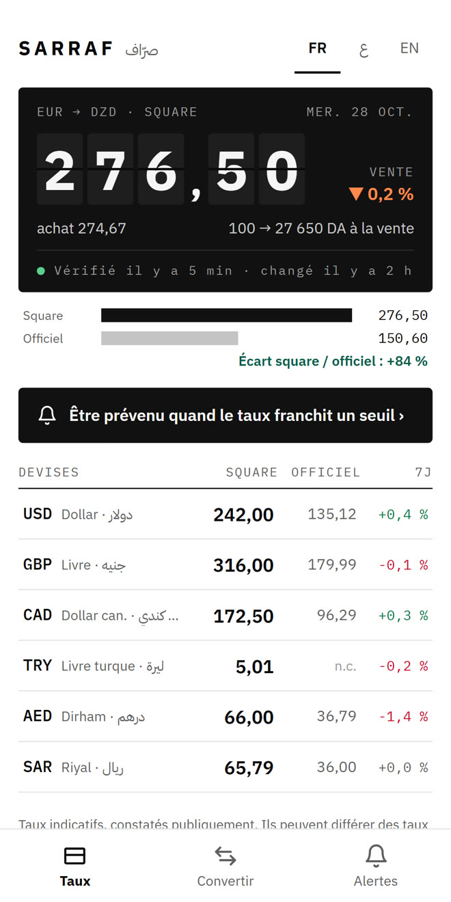
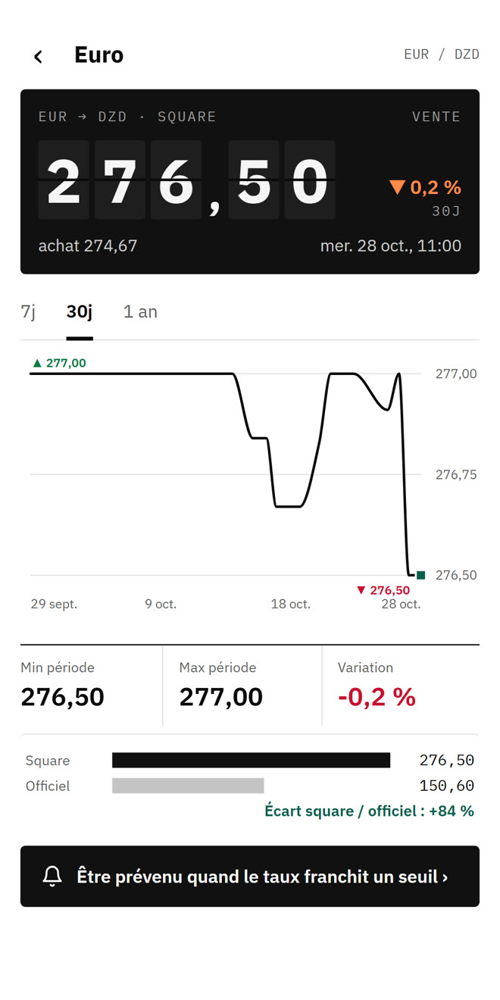
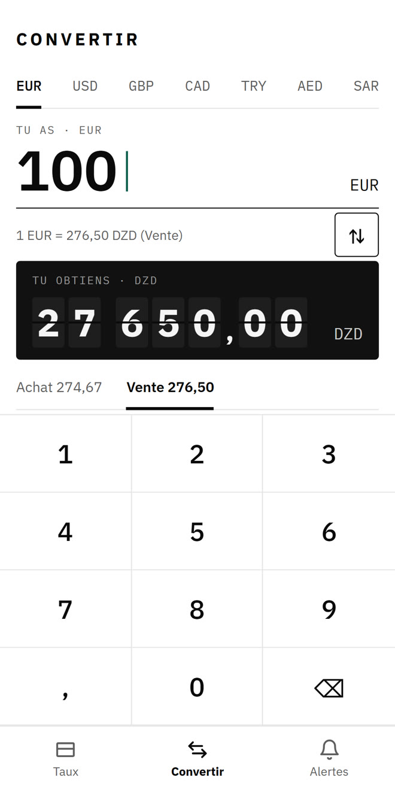
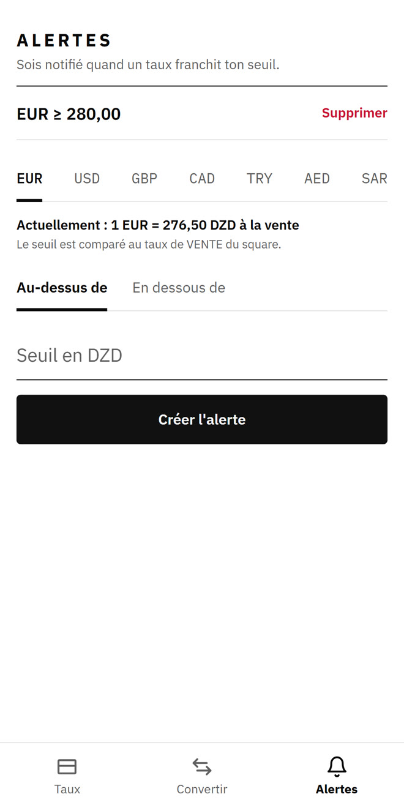

ASSIREM
Studio d'applications mobiles.
EUR · USD · GBP · CAD · TRY · AED · SAR → DZD
صرّاف
Le taux de change du dinar algérien, en un coup d'œil : le taux constaté sur le marché parallèle (le square) pour 7 devises, et le cours officiel de la Banque d'Algérie à côté pour 6 d'entre elles, vérifiés toutes les 30 minutes. À titre informatif.
Disponible sur Google Play



Ce que fait Sarraf
Officiel et square, côte à côteLe cours de la Banque d'Algérie, le taux constaté au square Port-Saïd, et l'écart en %.
7 devisesEUR, USD, GBP, CAD, TRY, AED, SAR face au dinar (DZD), pour 1 et pour 100.
Alertes de seuilChoisis ton seuil, reçois une notification quand le taux le franchit.
HistoriqueLa courbe sur 7 jours, 30 jours ou 1 an, avec le plus haut et le plus bas de la période.
ConvertisseurDans les deux sens, au taux du square, à l'achat comme à la vente.
3 langues, hors ligneFrançais, arabe (de droite à gauche), anglais. Les derniers taux restent visibles sans connexion.